Cualquier negocio puede crear su cuenta solo, desde Crear cuenta, sin tarjeta de crédito. La prueba gratis dura 14 días, con todas las funciones; una franja arriba del panel indica cuántos días quedan.
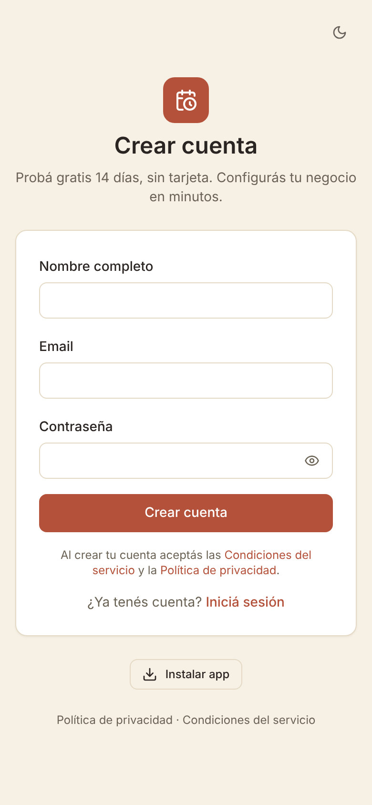
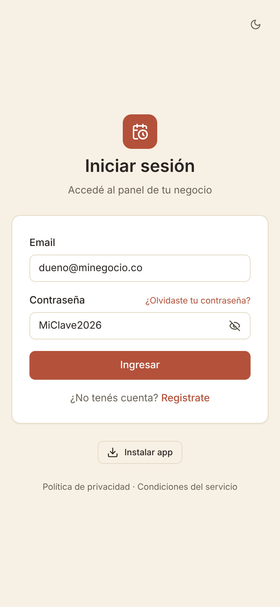
La sección de reservas cambia de nombre según el rubro (Turnos en una barbería, Citas de taller en un taller, Reservas de mesa en un restaurante) y suma estas herramientas:
Además de Lista y Calendario, hay una vista Tablero con una columna por etapa del trabajo (por ejemplo, en un taller: Recibido, Diagnóstico, Cotización enviada, Aprobado). Cada tarjeta se pasa a la etapa siguiente con las flechas.
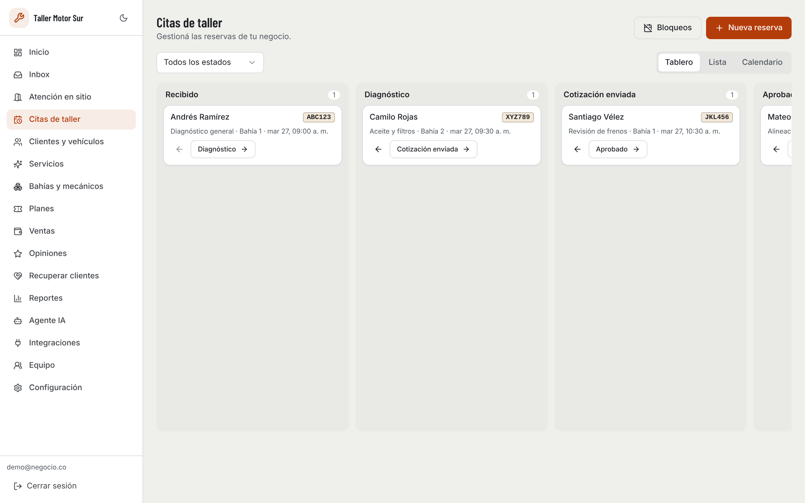
El botón Bloqueos cierra una franja para vacaciones, almuerzo, festivos o mantenimiento. Se puede bloquear todo el negocio o un solo recurso, por horas o días completos. Ni el agente ni la página pública ofrecen esos horarios.
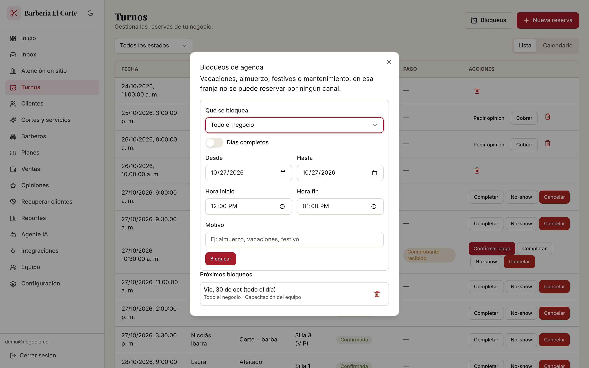
| Acción | Para qué sirve |
|---|---|
| Completar / No-show / Cancelar | Cierran la reserva. Completar la suma a las ventas y a los reportes. |
| Confirmar pago | Aparece cuando la reserva pidió anticipo por Nequi: se revisa el comprobante y se confirma. |
| Cobrar | Registra el pago del servicio (efectivo, Nequi o tarjeta) y lo descuenta de un plan si el cliente tiene uno. |
| Pedir opinión | Le envía al cliente una encuesta corta de 1 a 5 estrellas (ver sección 20). |
La ficha de cada cliente guarda lo que importa en cada negocio: los vehículos (placa, marca, modelo y año) en un taller, las mascotas en una veterinaria o peluquería canina, las preferencias en una barbería o un spa, o los datos del estudiante en una academia. El agente también los pregunta y los guarda solo.
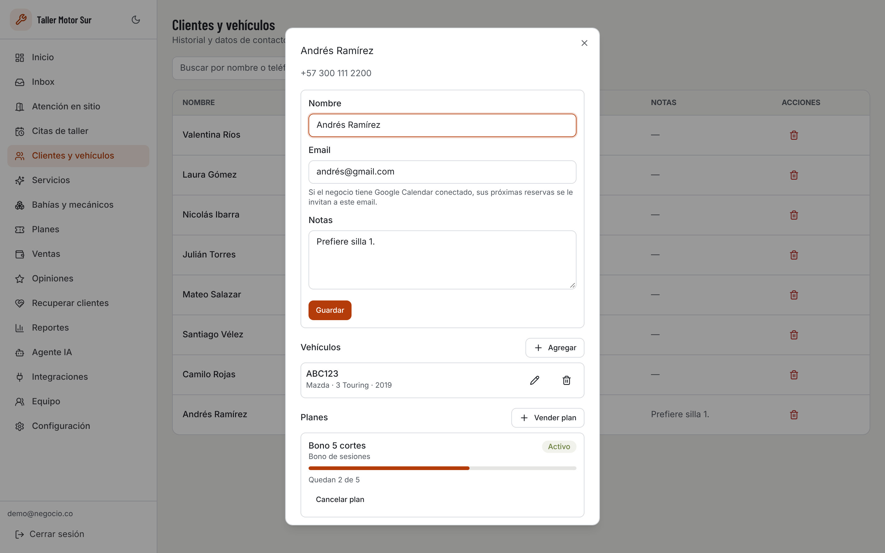
En restaurantes, Servicios se llama Carta y servicios. Cada plato tiene sus días del menú: la página de pedidos por QR muestra solo lo que se ofrece hoy, y la pestaña Menú de hoy deja revisarlo de un vistazo.
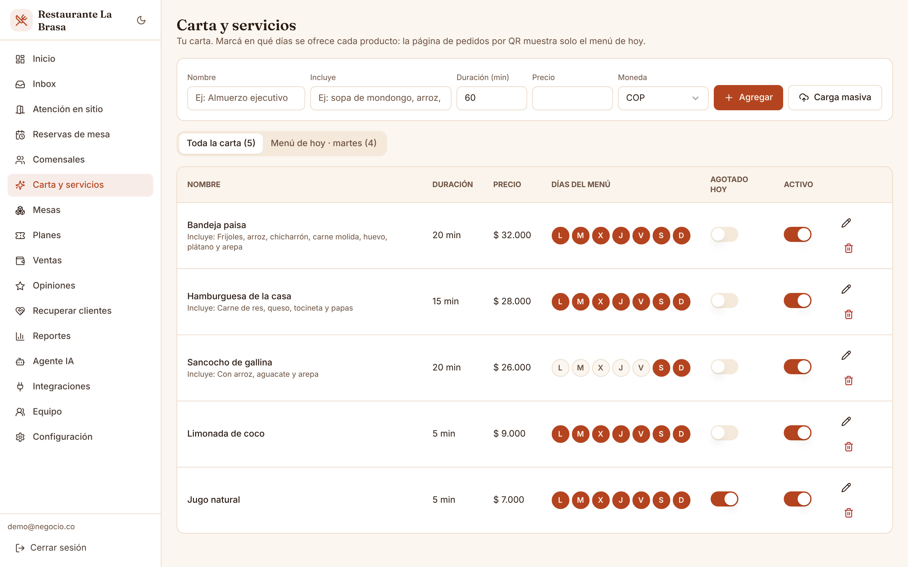
Cada recurso (un barbero, una silla, una bahía o una mesa) puede tener su propio horario, distinto del horario del negocio. Solo se le asignan reservas dentro de esas franjas; las ausencias puntuales se cargan como bloqueos.
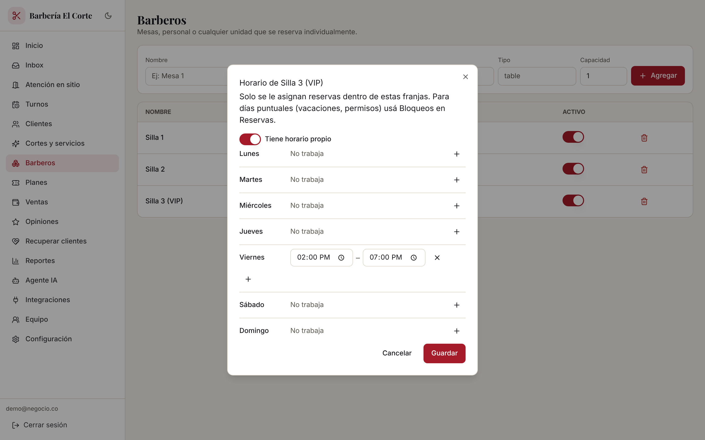
Cada negocio tiene una página pública de reservas donde el cliente reserva solo, sin escribir por chat y sin crear cuenta. Se encuentra en Inicio, en la tarjeta Tu página de reservas:
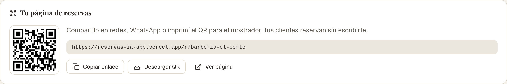
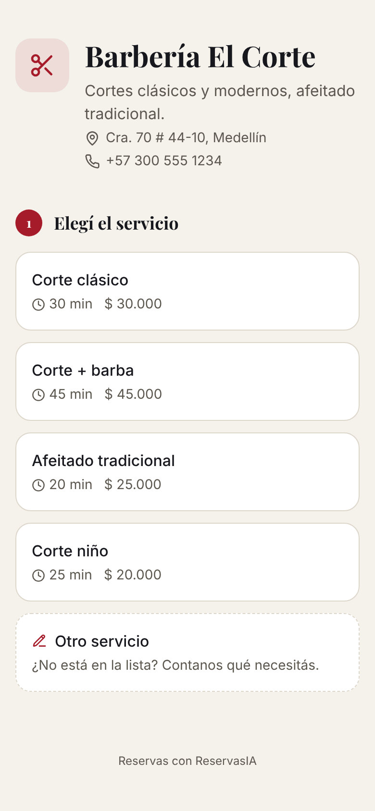
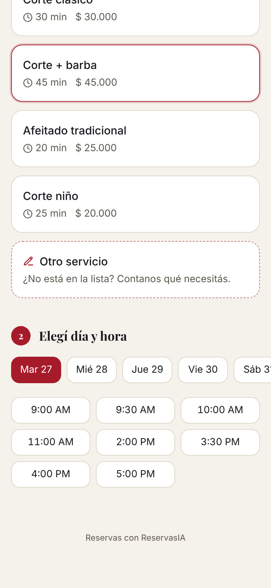
La reserva aparece al instante en el panel, con el canal “público”, y suena el aviso si las notificaciones están activas.
17. Restaurantes y filasEn un restaurante, el mismo QR abre la carta del día y el cliente hace su pedido desde el celular, sin descargar nada.
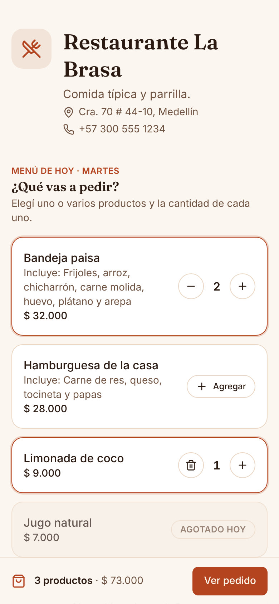
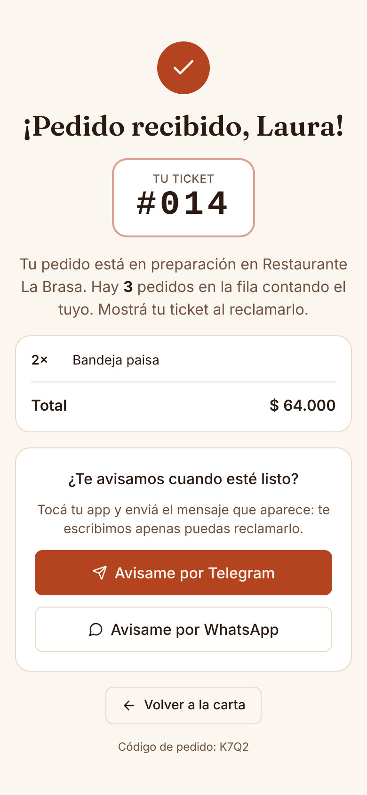
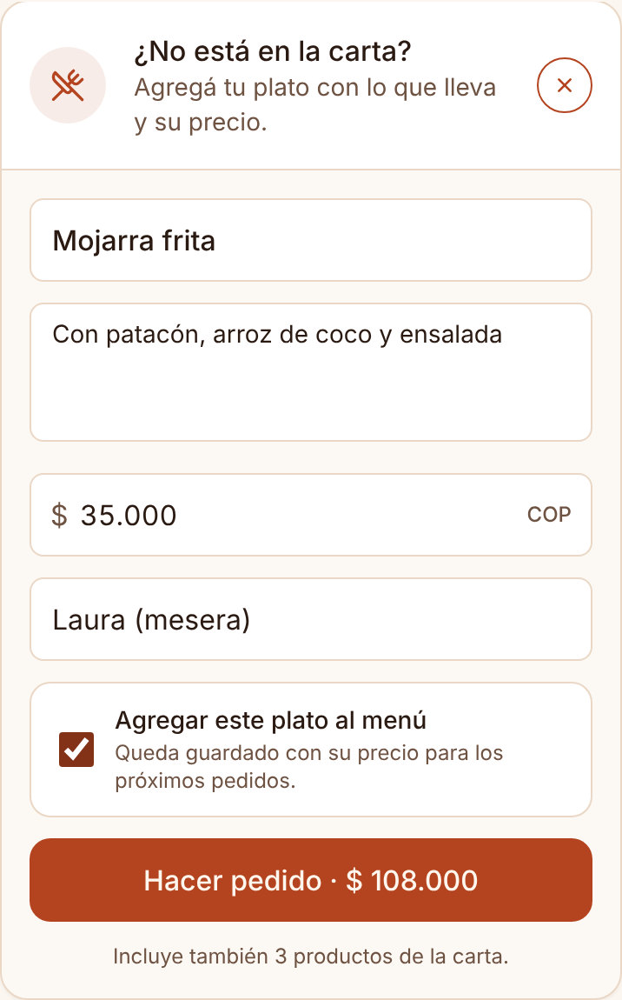
El mesero puede anotar un plato que no está cargado, con lo que lleva y su precio. Si marca Agregar este plato al menú, queda guardado en la carta con ese precio para los próximos pedidos.
La sección Atención en sitio es el tablero en vivo de la cocina o del mostrador: recibe a quien llega, con o sin reserva, y lo lleva por En espera → En atención → Listo para entregar. Cada atención queda guardada en las reservas y en la ficha del cliente.
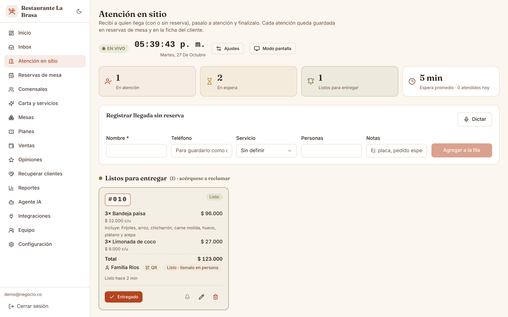
Ajustes vale para todo el equipo: la alerta de demora resalta en color y con sonido la tarjeta de quien lleva esperando más de los minutos que elijas. El Modo pantalla muestra el tablero a pantalla completa, para un televisor de cocina o de sala de espera; ahí se pueden ocultar precios y totales y abreviar los nombres de los clientes (“Andrea G.”).
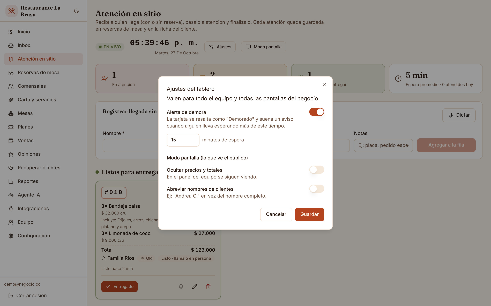
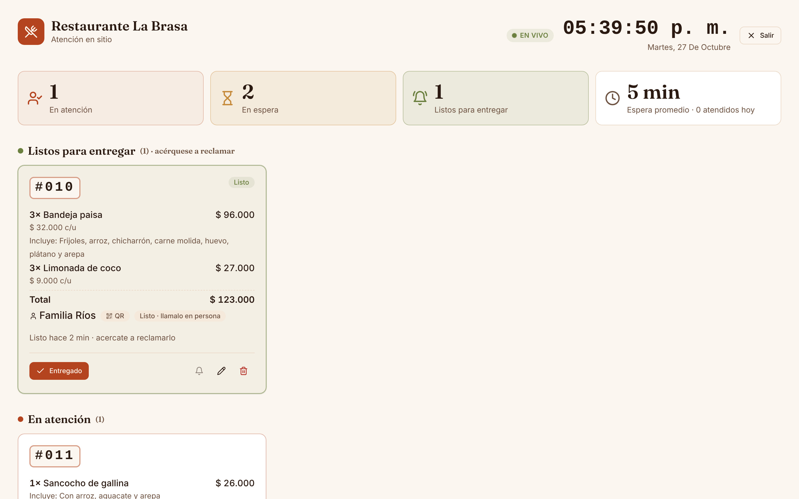
En Planes se arma el catálogo de lo que se vende por adelantado. Se descuentan solos cada vez que se completa una reserva del cliente:
| Tipo | Ejemplo | Cómo se usa |
|---|---|---|
| Bono de sesiones | Bono 5 cortes | Cada reserva completada descuenta una sesión, hasta agotarlas o hasta su vencimiento. |
| Membresía | Membresía mensual | Da derecho a los servicios incluidos mientras esté vigente. |
| Tarjeta de sellos | 8 sellos = 1 corte gratis | Suma un sello por visita; al completarla aparece Canjear premio. |
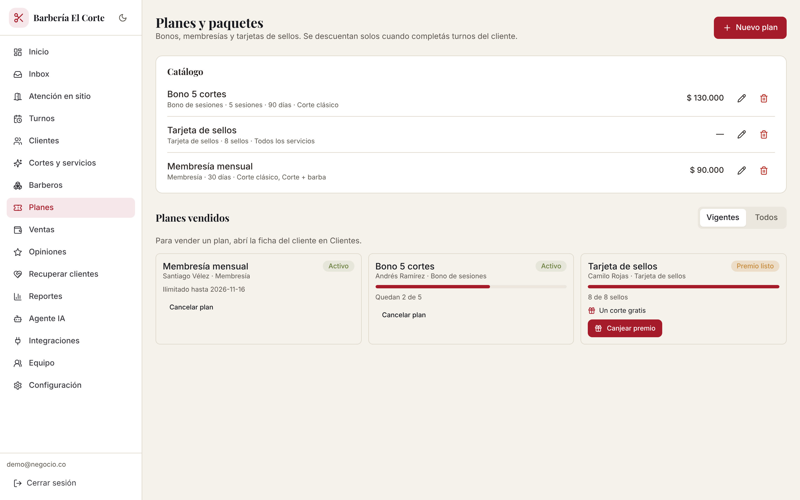
Para vender un plan, abrí la ficha del cliente y tocá Vender plan. Abajo se ven los planes vigentes con su avance.
19. CajaVentas muestra qué se vendió en el día y cuánto entró por cada medio de pago: efectivo, Nequi y tarjeta. Suma sola las reservas cobradas y los pedidos entregados; con Registrar venta se agrega una venta suelta (por ejemplo, un producto de mostrador).
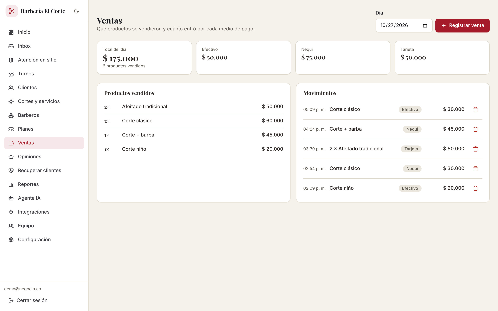
Después de cada atención, el cliente puede calificarla de 1 a 5 estrellas y dejar un comentario. La encuesta se envía sola por el chat (o con Pedir opinión desde la reserva). El panel muestra el promedio, la distribución y los comentarios.
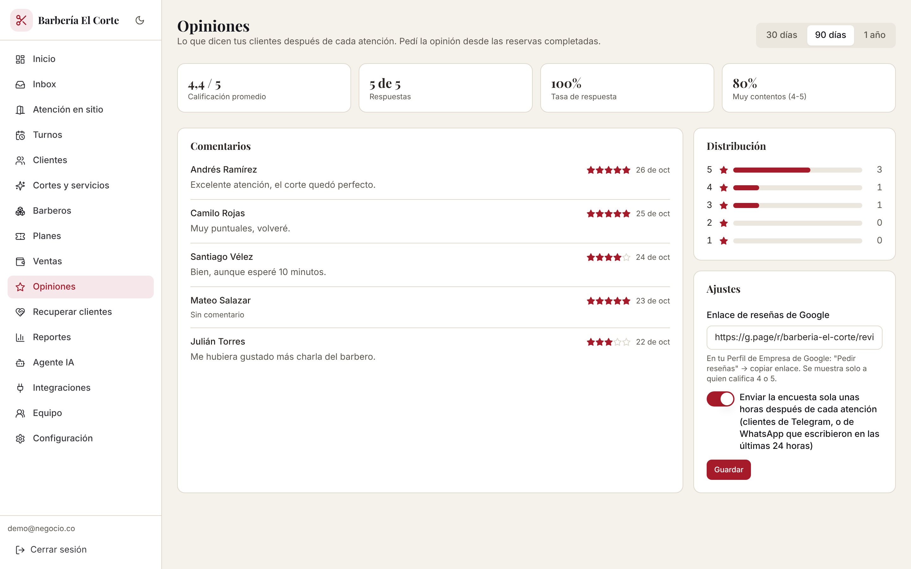
Si cargás el enlace de reseñas de Google del negocio, a los clientes contentos (4 o 5 estrellas) se les invita a dejar la reseña también en Google.
Lista a los clientes que hace tiempo no vuelven y no tienen nada agendado, empezando por los que más veces vinieron. En ¿Cuándo se considera perdido? se eligen los días sin volver (45 por defecto).
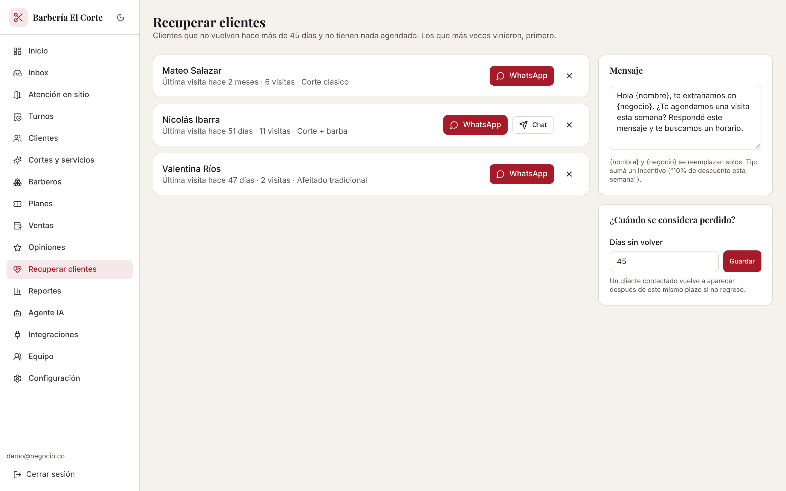
{nombre} y {negocio} se reemplazan solos.En Configuración se sumaron estas opciones:
Si lo activás, el agente puede pedirle al cliente un anticipo por Nequi antes de confirmar la reserva. El cliente manda la foto del comprobante por el mismo chat y alguien del negocio confirma el pago desde el Inbox o desde la reserva: el agente nunca confirma un pago por su cuenta.
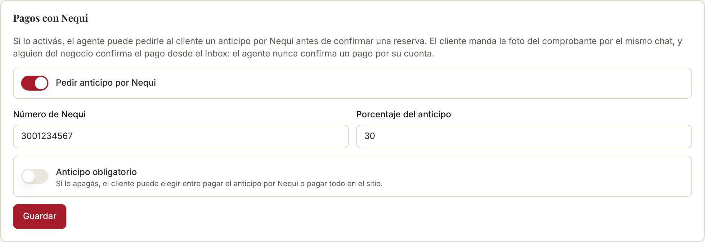
La tarjeta Suscripción muestra hasta cuándo está activo el servicio. Para renovar, se paga por Nequi y se sube la captura del comprobante; una vez revisado, el servicio se extiende y llega un correo de confirmación.
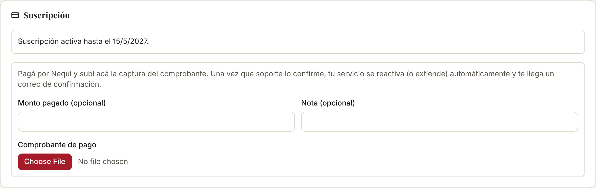
Con Notificaciones push el celular o el computador avisa con sonido apenas entra una reserva nueva, aunque el panel esté cerrado. En iPhone, primero hay que instalar la app (“Compartir → Agregar a pantalla de inicio”) y abrirla desde ese ícono.
En Integraciones, la tarjeta de Google Calendar copia cada reserva al calendario del negocio. Al conectar, Google puede mostrar el aviso “Google no verificó esta app”: tocá Configuración avanzada → Ir a ReservasIA para continuar. Los clientes que dejaron su correo reciben además la confirmación con el botón Agregar a Google Calendar.
Reportes resume turnos, ingresos, ticket promedio, cancelaciones y no-shows del período (7, 30 o 90 días, o un año), con el detalle por servicio, por recurso y por canal. El botón CSV descarga los datos para abrirlos en Excel.
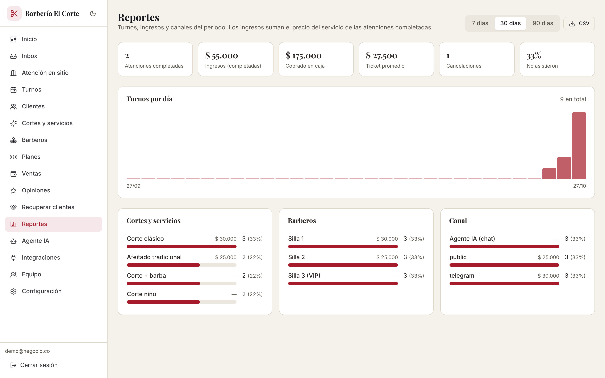